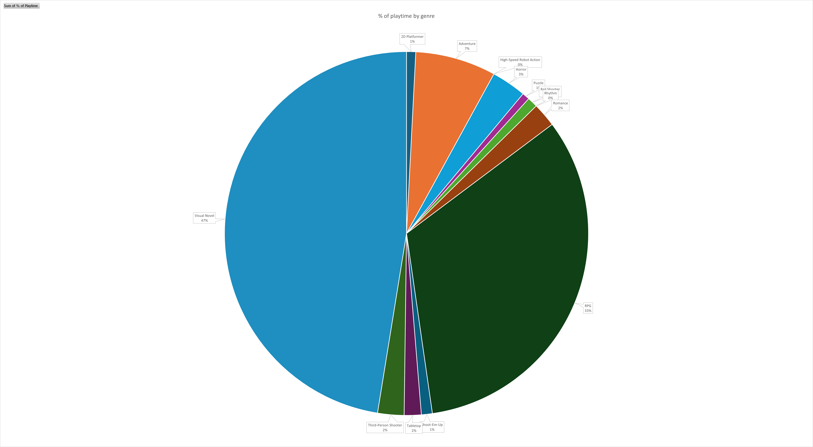
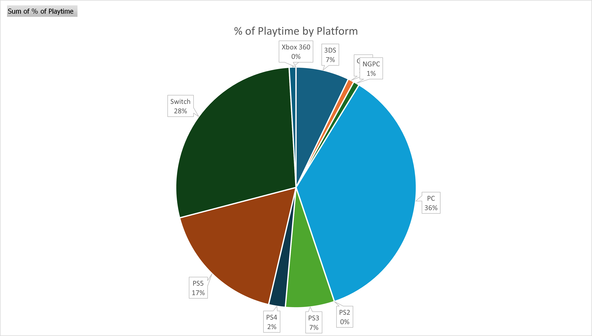

1game1week Midyear Stats
This isn't a 1g1w post. That'll come, but I wanted to take a second and go over some stats I wanted to get from the stuff I've played so far.
I've mentioned it before, but 2025 is easily the best pace I've been at for the most I've played, ever. I've already broken the record of new games I've played, so I'm really happy there.
To preface: this post will have various pie charts and images with stats. They had to be made to look small as to not overwhelm how the blog post looks.
If you are interested in seeing the stats (I dunno why, but hey, you do you), you can right-click the images and select Open image in new tab. This will show you the image in its full size.
I wanted to answer the following questions:
- How many games have I beaten, and how does it compare to last year?
- What is my current total playtime, and how much of it do I spend per platform, per genre, and per game?
- What are the trends to the release year of the games I play?
- What are the trends to the purchase year of the games I play?
- What platforms do I use the most?
Let's start with the first:
1) How many games have I beaten, and how does it compare to last year?
I've mentined before that I do not make a 1g1w post for every game I beat. There's a few that I don't feel should be relevant to 1g1w, or I don't care to post about, etc.These come for a variety of reasons, but mostly relate to length, variety, themes. I've tried to gravitate to things I can post about, for the most part.
Thank you Billy for helping me with setting up that table in HTML because I had no idea how to do that :)
In short: up until today, I have beaten 34 games this year. As I mentioned before, this absolutely crushes anything I've done before.
By this time last year, I had only beaten 10 games.
2) What is my current total playtime?
Getting accurate playtimes in the current generation is unfortunately very akin to pulling teeth. PlayStation playtimes are broken, Nintendo Switch does rounding...There's a few games that track gametime on their own, which is great and helps a lot.
For various of the games I played, I used a third-party tool, Exophase, to keep track. However, I tried as much as I could to get accurate gametimes from either the OS or the games themselves. There is a margin of error on these. However wide that margin may be depends on various factors: time previously played before 1g1w / restarting, time drift, Exophase, etc.
I'm treating this less of an absolute and more of a guideline.
From my data, I was able to find I have played approximately 433.9 hours of games since the beginning of the year, counting games I was able to find semi-reliable data for.
Unfortunately, I was unable to find any data for the following games:
- Zone of the Enders (PS3)
- Atelier Marie (PS2)
- Song of Saya (PC)
- Phoenix Wright: Trials and Tribulations (Switch)
- Guitar Hero World Tour (360)
- Space Channel 5 / Space Channel 5 Part II (PS2)
In total, it wouldn't surprise me if these added to something around 40 hours. For now though, I'm counting them as if they're 0 hours, so that 433.9 hours might be 473 or so if I had this data.
I'm a little bummed about it, but there isn't really anything to do.
This is the current breakdown:
% of playtime by genre:
To absolutely no one's surprise, Visual Novels are the top genre so far taking up 47.45% of total playtime, followed by RPGs at a 32.96%.
In case you're curious, ~35% of that 47.45% is taken up entirely by the Higurashi franchise, making it easily the most-played franchise this year (which is why I elected to no longer count any subsequent entries towards 1g1w, lol).
% of playtime by platform:
While I'm unsurprised that PC was #1 due to Higurashi being the most prominent franchise this year, I'm very surprised seeing PS5/PS4 that low, given how many PS5 games I've been purchasing this year, as well as the fact that PS5 has the game with the longest individual playtime, Atelier Yumia. Until I realized I've only beaten 5 of them.
It's no wonder Switch is that high, given what I just mentioned. Most of the titles I've played on Switch aren't incredibly long with notable exceptions, but they are plentiful, which gives it a good chunk of attention.
This also tells me the following: I'm heavily favoring modern platforms (PC, Switch, PS5/4), as they're taking up a total of 83% of total playtime. I'm not necessarily surprised, but I'm very intrigued by it. Just means I have to give older platforms some love :)
% of playtime by game:
Slightly harder to follow here, but the breakdown is just about the same as what I mentioned before.
Atelier Yumia easily takes the cake for length, with the #2 spot, Chaos;Head Noah, trailing in hours by just shy of 7 hours. Honestly, it wouldn't surprise me if me finishing (completing) Chaos;Head was the reason Switch got bumped up so high in the platform playtime percentage. Without having Yumia as a massive difference, PS just falls flat. Even with seven hours of difference, the Switch gets there.
Surprisingly, 10 of these games exceed the 20 hour marks, which is something I didn't expect going into 1g1w as I simply didn't think I'd be able to play that length of games consistently, have a normal sleep schedule, and work full time. It's certainly opening my eyes to how much time I really have, and just misuse it by doomscrolling.
How does playtime compare to last year?
By this point last year, I was at 319.3 hours, give and take ~20 due to missing data.This is a difference of approximately 114.6 hours.
Referencing the entirety of 2024, I had an approximate playtime of 682.86 hours, give or take some 40 hours due to missing data.
This would put me at around 64% of total playtime in half the year, which is really interesting considering most of my playtime in 2024 came after the halfway mark.
3) What are the trends to the release year of the games I play?
This was a very interesting one, as I didn't expect the variety:To clarify: some of the games in their original form are older than they're listed. I decided the following rules for this list:
- Release year is based on the particular release I purchased, not the original release. For example, the MangaGamer release of Tatarigoroshi was in 2016, but the original was from 2004. For the purposes of this list, 2016 will be listed, as that is the release I purchased.
- For compilation titles, the release date of the compilation title will be used, not the original title release date.
- For remakes, the remake release date will be used.
- For ports such as Virtual Console, the Virtual Console (or equivalent) release date will be used, not the original release date.
36% of titles played were released within the last five years (2021 -> 2025), 66% were released within the last 10 (2016 -> 2025).
The majority of all titles (97%) were released after the turn of the millenium. This mostly keeps up with the previously-observed platform trend, with me favoring games released for modern/newer platforms, compilation titles, or modern ports.
4) What are the trends to the purchase year of the games I play?
This is different. I'm not asking "when did the game come out?", I'm asking "how long have I had the game?". Essentially, do I tend to play recently-purchased titles more than titles I've had for a while, and is recency bias a factor as to what I play?
The answer is an absolute yes. There is heavy recency bias to what I'm playing, with a staggering 70% of games being purchased within the last 3 years (2023 -> 2025).
For reference, there are only two 2025-released games in the list, Atelier Yumia and Dead or Alive. With the exception of Atelier Marie, all 2025 purchased games that I've beaten this year have been post-2017 releases, which is when the Switch released. Coincidentally, 5 of them are Switch titles.
Once again: I'm favoring modern platforms. More love to retro consoles is required.
5) What platforms do I use the most?
This is more of the same as % playtime by platform. In fact, the graphs are nearly identical with the exception that some of the older platforms don't have the 0 playtime restriction, which means they're able to be properly represented as a whole.
PC seems to lose the most shine here, mostly due to playtime being its high point, not quantity of games played- like I mentioned, Higurashi alone takes 35% of all playtime. But with 34 games, it takes up 17% of games played, making it substantially harder for it to carry PC to the top again.
Instead of having 83% of total games, 67% of games go to modern consoles, a drop of 16%. Not the biggest difference in the world, but interesting to observe nonetheless. With a larger dataset, it might less-so indicate that I'm favoring modern consoles, more so "longer" games.
As mentioned before, 10 of the 34 total games cross a 20-hour threshold, and 15 cross a 9-hour threshold, with an interesting number of retro titles in the shorter-end of games:
- Clock Tower Rewind (2024, original 1995): 3.67 Hours
- Deathsmiles (2021, original 2007): .77 Hours
- Attack of the Friday Monsters (2014): 4.08 Hours
Etc.
Does this mean anything? I don't really know. I'm throwing darts at a board, really. I wonder if I could find a long retro game on original hardware to dig my teeth into?
Takeaways:
tldr:- I seem to be favoring modern platforms. Both playtime and play counts indicate this, with 83% of total playtime being devoted to modern platforms and 67% of all titles being on modern platforms.
- I'm heavily favoring visual novels, but this is mostly a result of going through a very long franchise in a short span.
- I'm heavily biased towards games I purchased within the last three years.
This Year:
- Total Games Beaten: 34 games
- Total Playtime: Approximately 433.9 hours
- Longest Playtime: Atelier Yumia with 51.82 hours
- Preferred Platform: Switch with 10/34 games
- Preferred Genre: Visual Novels with 9/34 games
Last Year (up until 6/25/24):
- Total Games Beaten: 10 games
- Total Playtime: Approximately 319.3 hours
- Longest Playtime: Final Fantasy VII Rebirth with 175.02 hours
- Preferred Platform: Switch with 5/10 games
- Preferred Genre: RPG with 5/10 games
Last Year (full):
- Total Games Beaten: 25 games
- Total Playtime: Approximately 682.86 hours
- Longest Playtime: Final Fantasy VII Rebirth with 175.02 hours (second longest being ASTLIBRA at 84.75 hours)
- Preferred Platform: Switch with 11/25 games
- Preferred Genre: RPG with 10/25 games
What's next?
Given this data, I'm very likely going to start trying to overcorrect and play older titles that I did not purchase over the last three years on original hardware.This is not to say I'm likely to abandon modern platforms, it's more that I'm realizing I'm neglecting a large part of my collection for the sake of newer things- the whole purpose of 1g1w was to help with backlog clearing. If I'm beating games that I'm buying, then the whole point is moot.
We shall see how all this data being in front of me changes how I play.
Additionally, I want to put a focus into being better at tracking time played. I'm not a fan of having all those zeroes, as they make for inaccurate data down the line.
It'll likely be something simple, like a chronometer, that does the trick.
Hopefully I actually remember to stop it whenever I'm done playing.
I will also mention: I'm incredibly happy that I've been able to get this far in 1g1w. The less time I've been spending on scrolling and thinking about work or being depressed, the more I'm able to play or read, and that is an incredible feat to me.
The fact I'm 63% of the way to matching the entirety of my playtime for last year, at 50% of the year, is staggering. It definitely comes due to a shift of focus, and I think I have the "pressure" of 1g1w to thank for that. It forces me to take a breather and play while tricking my adult brain that it's being productive because it's working towards an overall goal, 1g1w.
I had a lot of fun writing this, getting the data for this, and setting it all up in Excel.
An additional piece of lore is that I actually tracked spending, conditions (new/used), platforms, retailers I bought from this year as well, but felt pretty ashamed of having spent that much on games the year I said I was gonna try to not spend as much. The sum is at least slightly less than one of my paychecks, so... it's fine, right?
As a reward for making it this far, please enjoy the following video:
Thanks for reading! If you need to contact me for any reason, please feel free to email me at aru@hoshikawa-aru.com.